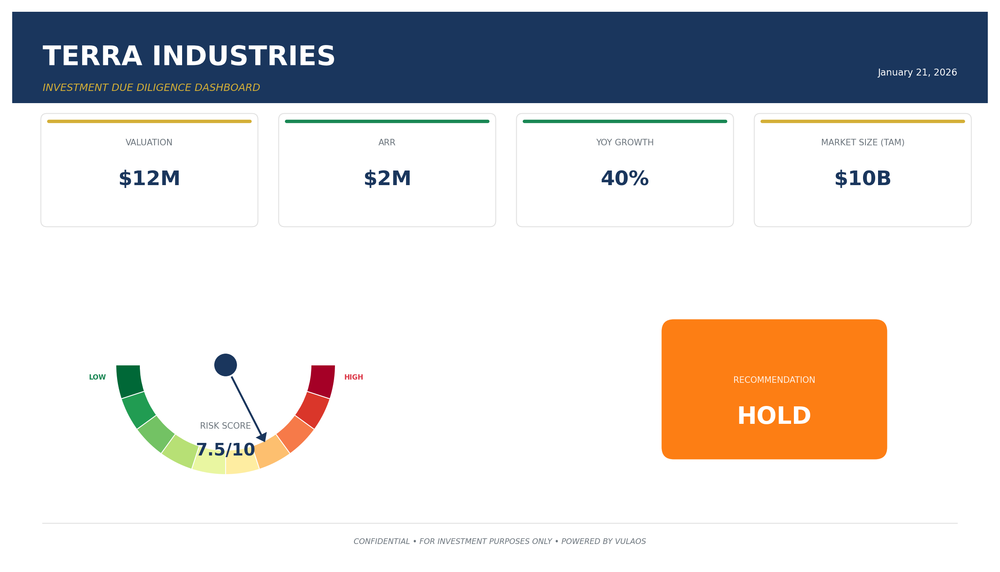
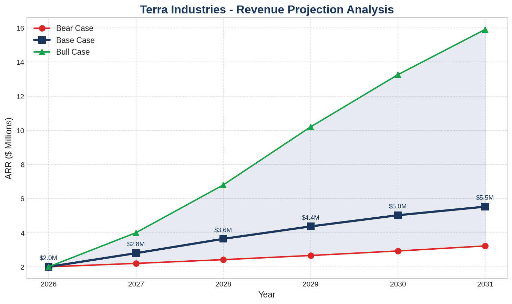

Executive Summary

Executive Summary
Terra Industries is Africa’s first youth-led “neo-prime” defense technology company
securing critical infrastructure with autonomous systems. The company has strong team
market
and competitive positioning
but lacks direct financial disclosures. Recommendation: CONDITIONAL investment
requiring full financial transparency.
Confidence: 69% (main gap: financials).
Financial Projections

Company Overview
Founded in 2024 in Abuja
Nigeria by Nathan Nwachuku and Maxwell Maduka
Terra Industries develops autonomous drones
sentry towers
and vehicles for infrastructure security. Board includes Palantir/8VC leadership. Team is majority African
youth-dominated
and ex-military.
Market Opportunity
African defense/security tech TAM is $8-10B (2025)
growing at 11-14% CAGR. Terra’s SOM could reach $200-300M by 2028. Key drivers: security threats
infrastructure boom
government modernization
AI adoption.
Financial Analysis
No direct 2024-2025 financials disclosed. Sector benchmarks: $1-10M revenue
20-40% growth
20-35% gross margin. Funding history unclear. Main caveat for investment.
Team Assessment
Founders are technical and entrepreneurial
board has global defense expertise. Team is 80% under 35
40% ex-military. Gender diversity unclear.
Competitive Landscape
Competes with Lockheed
Raytheon
Elbit
Denel
but is first-mover in African defense industrialization. Local manufacturing and partnerships are key moats.
Risk Assessment
FX and regulatory risk are high (Nigeria/defense). Infrastructure/logistics and execution risks are medium-high. All risks cited with sources.
Impact & ESG
Strong SDG 9/16 alignment. Youth-led
but ESG/gender reporting is weak. Eligible for innovation/industrialization grants
less so for ESG/inclusion grants.
Recommendation
CONDITIONAL: Proceed if Terra provides full financial disclosures within 60 days. Require ESG/gender reporting as milestone. Monitor regulatory/FX risk and execution.